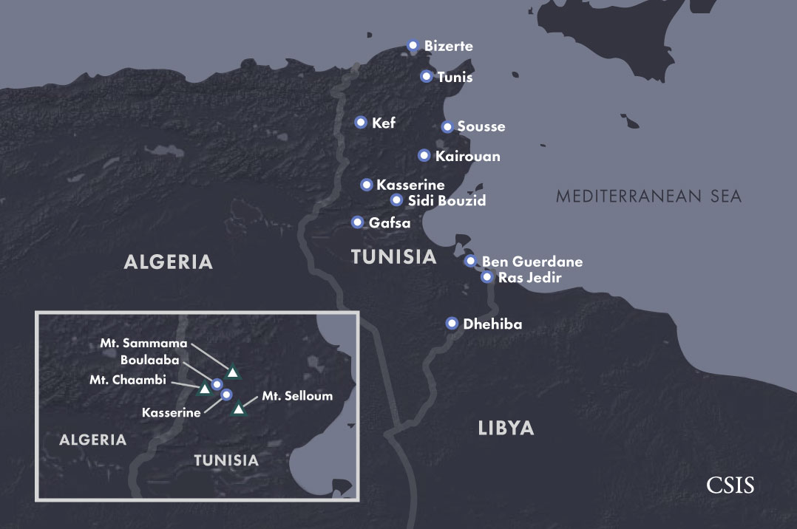

Tunisia is at the forefront of a global struggle against jihadi-salafi violence that has intensified since 2011. In the first two years after the revolution that ended decades of authoritarian rule under Zine el-Abidine Ben Ali, Tunisian jihadi-salafists saw Tunisia largely as a “land of da`wa,” or spiritual outreach. Rather than confront the state directly, they recruited adherents through social activism and encouraged young Tunisians to join the expanding fight against the Bashar al-Assad regime in Syria, which rallied would-be jihadi-salafi fighters and revolutionaries from around the world. Yet, Tunisia could not isolate itself from the gathering violence in the region. By 2013, a slew of attacks against military forces along the country’s western border and two high-profile political assassinations in the capital thrust Tunisia into a new phase of escalating and expanding confrontation. In the words of jihadi-salafists, Tunisia had become a “land of jihad.”
An estimated 6,000–7,000 young Tunisians have left home to fight in Syria and Iraq as well as in Libya with al Qaeda-linked groups and the Islamic State group (ISG) since 2011. Tunisians are one of the largest groups of foreign nationals among the estimated 40,000 or more foreign fighters who have joined jihadi groups in Syria and Iraq alone and the several thousand more who are believed to have enlisted in Libya.
It is important to note that these figures are subject to debate and not exact. The Tunisian government estimates that approximately 3,000 Tunisians have joined jihadi-salafi militant groups in Syria, while international estimates from foreign governments, the United Nations, and independent analysts are much higher.
An estimated 6,000–7,000 young Tunisians have left home to fight in Syria and Iraq as well as in Libya with al Qaeda-linked groups and the Islamic State group (ISG) since 2011.
As thousands of Tunisians went off to fight in foreign lands, others stayed home. Dozens of young Tunisians have committed terrorist attacks inside their country, killing scores of civilians and security personnel. Since 2013, the government has reportedly prevented thousands more from traveling outside Tunisia, presumably to join radical groups and jailed hundreds more in widespread arrests.
The extent of violence in Tunisia and the sheer numbers of young Tunisians lured toward jihadi-salafi groups in Syria and Libya have alarmed and confounded many Tunisians and outside observers. The susceptibility of so many young Tunisians to radical ideology and violence poses difficult questions: Why has a country with such hope for positive change and representative government produced one of the largest groups of jihadi-salafi fighters? Why has a relatively small Arab country that represents less than one percent of the world’s Muslim population played such an outsized role in the current wave of jihadi-salafi violence? Why has Tunisia been so vulnerable to terrorism?
Why has a country with such hope for positive change and representative government produced one of the largest groups of jihadi-salafi fighters?
There are no simple answers to these questions. Instead, a host of complex domestic and international factors have intersected to create physical and intellectual space for radical ideology and activity to grow and evolve across the country. The threat has expanded amid the uncertainties of a vulnerable moment in Tunisia’s political transition and history. Although religious ideologies of jihadi-salafism have inspired some Tunisian recruits, and undergird the armed groups which have drawn the vast majority of Tunisian fighters, a narrow focus on religion obscures the complex sets of motives that radicalize youth. Jihadi-salafi narratives have become the language through which a subset of disaffected Tunisians express frustrations that point to deeper ills facing the country. The remedies, like the affliction, resist concise answers.
This interactive website tells the story of how and why thousands of young Tunisians joined jihadi-salafi groups after the 2011 uprisings. It examines how a range of factors continue radicalizing Tunisian youth and how successive Tunisian governments continue battling an evolving knot of threats, while also grappling with the historic task of building a legitimate and representative government after decades of dictatorship.
The following sections explore distinct yet interrelated dimensions of these issues.
Violence in Tunisia: Analyzing Terrorism and Political Violence after the Revolution tracks terrorist attacks and major acts of political violence in Tunisia through an interactive map series showing how terrorism has evolved, beginning with the watershed year of 2013.
Tunisian Fighters in History and Today examines modern Tunisian jihadism from its beginnings in the 1980s to its unprecedented expansion after 2011 and analyzes the backgrounds and roles of the diverse new generation of recruits.
Domestic Context after the Revolution explores how Tunisia’s contested political, ideological, and security space after the revolution created the conditions for radicalism to grow.
The Puzzle: Radicalization probes the complex sets of personal and collective motives that impel individual Tunisians to join armed groups.
Libya: Tunisia’s Jihadi Nightmare assesses the growth of Libya as a hub for Tunisian and other foreign jihadi-salafi fighters, and the dangers its security vacuum poses to Tunisia.
Getting There: Journeys to Foreign Battle Zones depicts common routes that Tunisian recruits travel to reach conflict zones in Syria and Libya, and recounts the stories of selected fighters who have traveled those paths.
Fighting Radicalism: A Generational Struggle analyzes the long-term policy challenges Tunisia faces in battling extremism.
What follows is a sketch of Tunisia’s journey in its struggle against radicalism. It draws on a range of open source reporting and analysis, UN and government reports, and numerous discussions with Tunisian government and security officials, religious scholars, academics, journalists, businesspeople, activists, and members of civil society. It is not intended as a complete record or catalogue of violent incidents inside Tunisia since 2011 or an exhaustive account of Tunisian foreign fighters in Syria and Libya. It aims to explain the multiple security threats Tunisia faces and answer the question of why the country has been so vulnerable to radicalism. It examines the religious dimension of jihadi-salafi recruitment and violence as one piece of a larger story about the many unanswered questions facing Tunisian youth.
Although each country’s encounter with jihadi-salafi violence is unique, Tunisia’s experience holds important lessons for what has become a generational and global challenge.
 Next Chapter: Violence in Tunisia